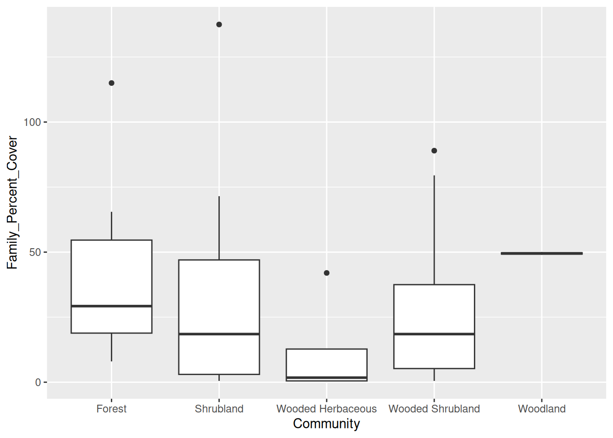
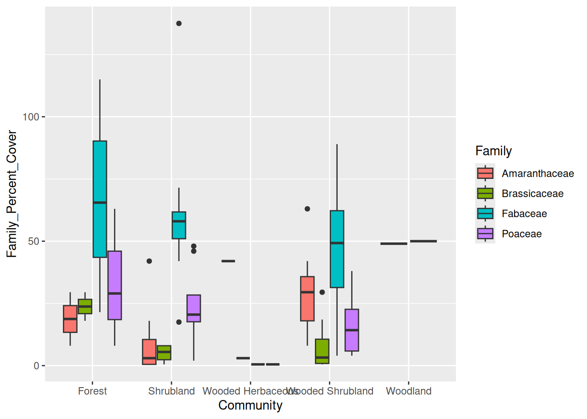
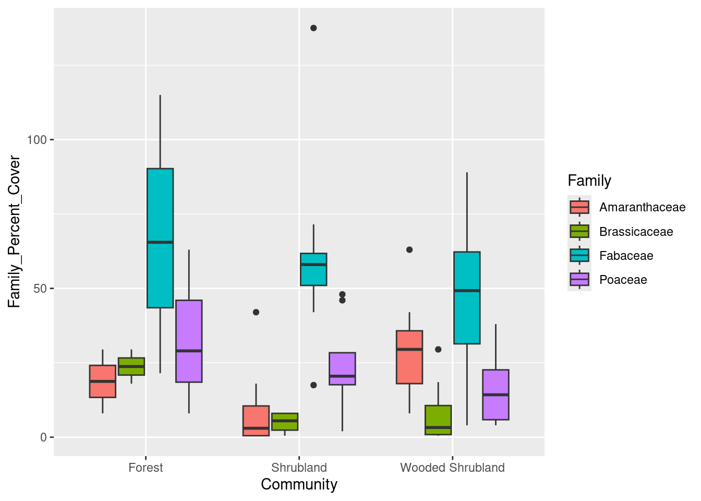
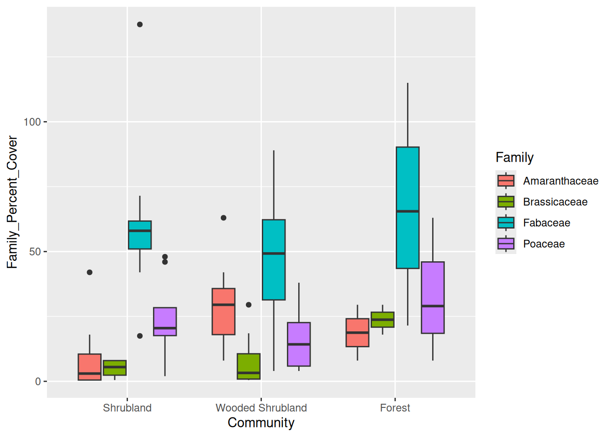

dir.create("data")
dir.create("output")Introduction to data summarizing and visualization
The R programming language provides many tools for data analysis and visualization, but all the options can be daunting. This lesson provides an introduction to wrangling data in R and using graphics to tell a story with data.
Learning objectives
- Understand the difference between files and R objects
- Modify data for proper data hygiene
- Summarize information from raw data
- Visualize data to convey information
Getting started
The tools: R and RStudio
For this lesson, we will use the R programming language in the RStudio environment. RStudio provides a convenient interface for working with files and packages in R. If you have not done so already, install R and RStudio; details can be found on the installation page.
Preparing our workplace
Key to successful programming is organization. In RStudio, we use Projects to organize our work (a “Project” is really just a fancy name for a folder that contains all our files). For this lesson, we’ll create a new project through the File menu (File > New Project). In the first dialog, select “New Directory”, and select “New Project” in the second dialog. Next you’ll be prompted to provide a directory name. This will be the name of our project, so we should give it an informative name. For this lesson, we will be using data from vegetation surveys of Tumacacori National Historical Park; so give our directory a descriptive name, like “vegetation”. We need also to tell RStudio where to put the lesson on our computer; for this lesson, we will place the folder on our Desktop, so it is easy to find. In your own work, you may find it better to place project folders in your Documents folder.
The last thing we need to do to set up our workspace is to use file organization that reinforces best practices. In general, there should be a one-way flow of information: we take information from data and write code to produce output. We want to avoid any output from messing up our data, so we create separate folders for each. We want to create two folders, one for our data and one for any output, which may include results of statistical analyses or data visualization. In the R console,
Getting the data
We are going to use vegetation survey data from the Tumacacori National Historical Park. These data are based on several surveys and are available through the National Park Service’s Integrated Resource Management Applications Data Store.
We can use R to directly download the data from the web. In the R console, enter:
download.file(url = "https://tinyurl.com/tnhp-data",
destfile = "data/tumacacori-vegetation.csv")(You can also download the file manually by entering https://tinyurl.com/tnhp-data into a web browser’s address bar.)
Note if you click on the data folder in your project (there should be a file browser in the lower-right corner of your RStudio window), you should see a single file, “tumacacori-vegetation.csv”, that shows up as 31.5 KB. If you do not see that file, or if the file size is listed as 0 KB, try downloading the file again, making sure you spelled the URL and destination file name correctly.
Data in R
Data outside R
We are going to start by looking at those data we downloaded in a spreadsheet program like Excel or LibreOffice. Open your spreadsheet program and open the file we just downloaded. We can see the data are organized in columns and rows. This is a good example of what is known as “tidy data” where there is one observation per row and one type of data per column. In these data, each row corresponds to a single plant species in a single plot, and the columns have different data about that species, including the family name and the percent cover in that plot.
Take a moment to look at those data but don’t change any of the values in the cells. Close the file, and make sure not to save any changes to the file.
Data in R
We are going to work with those same data in R. To do so we will need to read the data in to R’s memory, but first we are going to start a script so all the steps we take for data analyses are going to be saved in one place. Make a new script through the File menu, via File > New File… > R Script. We’ll start by adding a little bit of information at the beginning of the script:
# Plotting Tumacacori vegetation
# Jeffrey C. Oliver
# jcoliver@email.arizona.edu
# 2019-09-06Note that RStudio is also telling us that we have unsaved changes: the text in the tab is red and there is a little asterisk up by the file name (which is probably “Untitled1”, which should also be a clue). We should save this file via Ctrl-S (Window or Linux) or Cmd-S (MacOS), giving it a short but descriptive name. We’ll use tumacacori-plots.R.
Now we are finally going to read data into R. When you opened the file in Excel you might have noticed that it has the file extension “csv”, which stands for Comma-Separated Values. The CSV file format is common for data tables and has the benefit that it can be easily ready by many programs, which is not always the case for .xls and .xlsx files. To read the data into R, we use the read.csv function:
plant_data <- read.csv(file = "data/tumacacori-vegetation.csv",
stringsAsFactors = TRUE)The statement shows typical syntax for an R command. From an abstract perspective, most R statements look like:
\[ Variable \enspace Name \leftarrow Function \enspace Name (Function \enspace Arguments) \]
The function (read.csv) is given two pieces of information, or arguments:
filewhich tells R where the file is located (in this case, in the data folder)stringsAsFactorswhich tells R to treat text data as categorical data
The data in the file are read into R, then stored in a variable called plant_data.
Quality Assurance
Whenever we start writing a new script, we always want to make sure the data are being read in correctly. When we are doing this initial quality check, we don’t necessarily need to record all the commands we type, so we can use the R console to type commands. We’ll start with head which shows the first six rows of data:
head(plant_data) Plot_Code Field_Name Common_Name Family
1 TUMC_IP01 Acacia constricta whitethorn acacia Fabaceae
2 TUMC_IP01 Acacia greggii catclaw acacia Fabaceae
3 TUMC_IP01 Amaranthus palmeri carelessweed Amaranthaceae
4 TUMC_IP01 Aristida ternipes spidergrass Poaceae
5 TUMC_IP01 Bidens leptocephala fewflower beggarticks Asteraceae
6 TUMC_IP01 Boerhavia spicata creeping spiderling Nyctaginaceae
Species_Code Percent_Cover Leaf_Type Leaf_Phenology Community
1 ACACON 30.0 Microphyllous Drought-deciduous Shrubland
2 ACAGRE 30.0 Microphyllous Drought-deciduous Shrubland
3 AMAPAL 3.0 Microphyllous Drought-deciduous Shrubland
4 ARITER 0.5 Microphyllous Drought-deciduous Shrubland
5 BIDLEP 18.0 Microphyllous Drought-deciduous Shrubland
6 BOESPI 8.0 Microphyllous Drought-deciduous ShrublandSimilarly, the tail function shows the last six rows of data:
tail(plant_data) Plot_Code Field_Name Common_Name Family
286 TUMC_IPS4 Eragrostis lehmanniana Lehmann lovegrass Poaceae
287 TUMC_IPS4 Erioneuron avenaceum shortleaf woollygrass Poaceae
288 TUMC_IPS4 Opuntia engelmannii cactus apple Cactaceae
289 TUMC_IPS4 Prosopis velutina velvet mesquite Fabaceae
290 TUMC_IPS4 Salsola kali Russian thistle Chenopodiaceae
291 TUMC_IPS4 <NA> Unknown Perennial Forb <NA>
Species_Code Percent_Cover Leaf_Type Leaf_Phenology Community
286 ERALEH 0.5 Microphyllous Drought-deciduous Shrubland
287 ERIAVE 0.5 Microphyllous Drought-deciduous Shrubland
288 OPUENG 0.5 Microphyllous Drought-deciduous Shrubland
289 PROVEL 50.5 Microphyllous Drought-deciduous Shrubland
290 SALKAL 0.5 Microphyllous Drought-deciduous Shrubland
291 UNKFOR 8.0 Microphyllous Drought-deciduous ShrublandNote in the output of tail there are rows with <NA> values. In R, NA has a special meaning: it indicates missing values in the data. We’ll deal with that in a bit, but remember that missing data may require some special handling in R.
One more useful function is str, which stands for “structure”:
str(plant_data)'data.frame': 291 obs. of 9 variables:
$ Plot_Code : Factor w/ 22 levels "TUMC_IP01","TUMC_IP02",..: 1 1 1 1 1 1 1 1 1 1 ...
$ Field_Name : Factor w/ 71 levels "Acacia constricta",..: 1 2 5 9 12 14 18 37 44 45 ...
$ Common_Name : Factor w/ 74 levels "Annual Forb",..: 73 15 14 57 31 20 55 12 72 16 ...
$ Family : Factor w/ 26 levels "Acanthaceae",..: 12 12 3 20 4 17 20 7 15 12 ...
$ Species_Code : Factor w/ 74 levels "ACACON","ACAGRE",..: 1 2 7 11 14 16 19 39 46 47 ...
$ Percent_Cover : num 30 30 3 0.5 18 8 18 0.5 0.5 3 ...
$ Leaf_Type : Factor w/ 3 levels "Broad-leaved",..: 3 3 3 3 3 3 3 3 3 3 ...
$ Leaf_Phenology: Factor w/ 3 levels "Cold-deciduous",..: 2 2 2 2 2 2 2 2 2 2 ...
$ Community : Factor w/ 5 levels "Forest","Shrubland",..: 2 2 2 2 2 2 2 2 2 2 ...The output of str shows the size of the data, in terms of number of rows and columns, and the type of data in each column.
Cleaning up
Rarely are data “ready to go” when they are read into R. The data we are using are going to require two adjustments: removal of rows with missing data and a selection of only a portion of the data.
Missing data
To remove rows that have missing data, we use the na.omit function. Before we do, though, look at the “Environment” tab of your workspacek. There should be a row for plant_data that indicates the size of our data set. In this case, it should show “291 obs. of 9 variables”, indicating we have 291 rows of data, with 9 columns. Now let’s drop those rows with missing data, putting this command in the script file, not the R console:
plant_data <- na.omit(plant_data)Look again at the Environment tab. There should only be 287 obs. because we removed those rows with missing data. The number of columns should not change at all. One thing we are going to do now is to start commenting our code. We use the pound or hash sign (#) to tell R that we are writing a comment that should not be interpreted as code. For that line we just wrote, we are going to add a little note about why we did what we did.
# Do not want rows with missing data
plant_data <- na.omit(plant_data)Subsetting data
The dataset include observations of 26 different plant families at the plots. For our purposes, we are going to focus on a few of the families that make up most of these communities, namely the legumes (Fabaceae), grasses (Poaceae), mustards (Brassicaceae), and amaranths (Amaranthaceae).
# Only focus on four families
families_keep <- c("Fabaceae", "Poaceae", "Brassicaceae", "Amaranthaceae")
# Create new data with only four families
subset_data <- plant_data[plant_data$Family %in% families_keep, ]
# Re-level data in the Family column
subset_data$Family <- factor(subset_data$Family)In those three lines, we:
- Created a list of the names of the families we are interested in,
- Made a new variable called
subset_dataand stored the data for only those four families, and - “Re-leveled” the data in the Family column (no need to worry too much about what this means now, it will just make plotting easier later on).
Look again at your Environment tab, you should see another item listed, this one called subset_data. It should have 164 rows (observations). If it doesn’t, check your work to make sure you spelled all the family names correctly.
What about that spreadsheet file?
So we’ve done some manipulations to the data, dropping rows with missing data and creating a subset for four families. Did that do anything to the original spreadsheet file? Open the file in your spreadsheet program (like Excel or LibreOffice) and take a look. If you look towards the bottom, you can see that those rows with NA are still there. Compare this with the output of tail(plant_data). Note the plant_data in R does not have the rows with NA values because we removed them with na.omit above. This demonstrates that modfiying data in R does not change the data in the original data files. Files are only changed when we explicity tell R to write changes to the hard drive. Since we do not want those changes written to our original data file, we are not going to have R write any data to the files.
Summarizing data
We would like to get some summary data from our data, and R provides functions for making this easy.
Using summary
The summary function works on data frames (which is how R stores spreadsheets). It provides a little bit of information about each of the columns of data. For columns that have categorical data, like Common_Name, it tells us how many rows have each category. For columns with numerical data, it provides some statistics, such as the mean, median, minimum, and maximum.
summary(subset_data) Plot_Code Field_Name Common_Name
TUMC_IP12: 13 Prosopis velutina :21 velvet mesquite :21
TUMC_IP15: 11 Acacia greggii :19 catclaw acacia :19
TUMC_IP05: 10 Amaranthus palmeri :17 carelessweed :17
TUMC_IP14: 10 Bouteloua curtipendula :14 sideoats grama :14
TUMC_IP20: 10 Descurainia pinnata :14 western tansymustard:14
TUMC_IP02: 9 Setaria :12 bristlegrass :12
(Other) :101 (Other) :67 (Other) :67
Family Species_Code Percent_Cover Leaf_Type
Amaranthaceae:17 PROVEL :21 Min. : 0.50 Broad-leaved : 11
Brassicaceae :18 ACAGRE :19 1st Qu.: 0.50 Broad-leaved herbaceous: 4
Fabaceae :53 AMAPAL :17 Median : 3.00 Microphyllous :149
Poaceae :76 BOUCUR :14 Mean :12.73
DESPIN :14 3rd Qu.:18.00
SETAR :12 Max. :86.00
(Other):67
Leaf_Phenology Community
Cold-deciduous : 11 Forest :15
Drought-deciduous:149 Shrubland :70
Herb - annual : 4 Wooded Herbaceous: 4
Wooded Shrubland :71
Woodland : 4
Looking at this output, we see, for instance, there are 21 rows with data for velvet mesquite. We also see the mean percent cover is 12.73 across all plots and species.
Summary statistics for groups
But what if we wanted information about certain groups of data? For example we might want the mean and standard deviation of percent cover for a particular species. We can calculate those statistics for all species with the mean and sd functions:
# Extract summary statistics for all species in subsetted data
cover_mean <- mean(subset_data$Percent_Cover)
cover_sd <- sd(subset_data$Percent_Cover)We can see the values of each of these by typing in the variable name alone into the R console:
cover_mean[1] 12.72561cover_sd[1] 16.48287But how do we get these statistics for a single species, say velvet mesquite? We can perform a data subset within the calls to mean and sd:
# Calculate mean and standard deviation for mesquite alone
mesquite_mean <- mean(subset_data$Percent_Cover[subset_data$Common_Name == "velvet mesquite"])
mesquite_sd <- sd(subset_data$Percent_Cover[subset_data$Common_Name == "velvet mesquite"])In the commands above, we still used mean and sd on the Percent_Cover column but here we only used those rows where the value in the Common_Name column was “velvet mesquite”. Typing the variable names into the R console will show us the statistics for velvet mesquite.
mesquite_mean[1] 27.07143mesquite_sd[1] 21.14077Note that R is case-sensitive, meaning that lower-case letters and upper-case letters are different in R. If we changed the calculation for the mean from
mesquite_mean <- mean(subset_data$Percent_Cover[subset_data$Common_Name == "velvet mesquite"])to (capitalizing the “V” and the “M”):
mesquite_mean <- mean(subset_data$Percent_Cover[subset_data$Common_Name == "Velvet Mesquite"])the result will be NaN which stands for “Not a Number”. This is because there are zero rows with the common name of “Velvet Mesquite”, and the mean of nothing is not definable.
What if you wanted means and standard deviations for each species? You could copy and paste the code, changing the variable name and species name for every species, but since there are 32 different common names in these data, that would be tedious and a great way to make a mistake. Thankfully, there are additional packages in R that make this much easier.
Summary statistics made easier
To get these summary statistics for all species, we are going to use a third-party package. What does that mean, “third-party”? When we think of software, there are generally two parties: the one that wrote the software and the one that uses the software. In this case, the R Core Team wrote the R software and we are the second party, the users of R. Third-party packages are those written by someone other than the authors of the original software. R is especially amenable to third-party development and some of the most widely used packages in R were developed by teams other than the R Core Team. Importantly, if we are using third-party R packages, we need to take two steps: first we need to install the package, second we need to load the package’s functions into memory. The first (installation) only has to happen once on your machine; the second (loading into memory) has to happen every time you use R.
We are going to use the dplyr package for summarizing our data. To install dplyr:
install.packages("dplyr")Now that the package is installed, we can load it into memory with the library command. When using third-party packages, we generally add library commands to the start of the script, so anyone reading our script can tell which, if any, additional packages the script requires to run.
library("dplyr")
Attaching package: 'dplyr'The following objects are masked from 'package:stats':
filter, lagThe following objects are masked from 'package:base':
intersect, setdiff, setequal, unionNow we can use dplyr functions to generate summary statistics for each species. Here we use the group_by function to essentially create a separate pile of data for each species, then, for each “pile”, calculate the mean and standard deviation:
# Calculate mean and standard deviation for each species separately
summary_stats <- subset_data %>%
group_by(Common_Name) %>%
summarize(mean_cover = mean(Percent_Cover),
sd_cover = sd(Percent_Cover))If we consider the above code using English, it is easier to understand if we replace all the pipes (%>%) with the word “then”:
summary_stats <- subset_data, then
group_by(Common_Name), then
summarize(mean_cover = mean(Percent_Cover),
sd_cover = sd(Percent_Cover))Or, using words only,
Make a new variable called "summary_stats", take the subset_data, then
make a separate group of data for each Common_Name, then
calculate the mean and standard deviation of Percent_Cover and store them
in columns called "mean_cover" and "sd_cover" respectively.We can also add this explanation to our code through the use of comments:
# Calculate mean and standard deviation for each species separately
summary_stats <- subset_data %>%
# make a separate group of data for each Common_Name
group_by(Common_Name) %>%
# calculate the mean and standard deviation of Percent_Cover and store them
# in columns called "mean_cover" and "sd_cover" respectively
summarize(mean_cover = mean(Percent_Cover),
sd_cover = sd(Percent_Cover))We can see these summary stats by typing the variable name, summary_stats into the R console:
summary_stats# A tibble: 32 × 3
Common_Name mean_cover sd_cover
<fct> <dbl> <dbl>
1 Bermudagrass 8 0
2 big sacaton 13.6 21.7
3 bristlegrass 1.54 1.29
4 broomcorn millet 3 NA
5 bush muhly 14.3 11.3
6 cane bluestem 0.5 NA
7 carelessweed 20.9 18.7
8 catclaw acacia 19.2 17.5
9 catclaw mimosa 1.75 1.77
10 cliff muhly 13 7.07
# ℹ 22 more rowsGet % cover for each family/plot
Ultimately, we would like to look at how much cover there is for each plant family in the Tumacacori plots. Right now the data are shown for each species, but we would like to know how much of the plant cover corresponds to each family . We’ll use the dplyr package again for summarizing data, but this time we are going to group by several levels: first by the plot, then by family, then by the community.
# Calculate familiy-level total percent cover for each plot separately
family_data <- subset_data %>%
group_by(Plot_Code, Family, Community) %>%
summarize(Family_Percent_Cover = sum(Percent_Cover))`summarise()` has grouped output by 'Plot_Code', 'Family'. You can override
using the `.groups` argument.Once again, thinking about this code in English, we can replace all the pipes (%>%) with the word “then”:
Make a new variable called family_data, take the subset_data, then
make a separate group of data for each Plot_Code, break those groups up
into smaller groups, one for each Family, divide those groups into separate
groups for Community, then
add up all the values in the Percent_Cover column and store it
in a column called "Family_Percent_Cover"If we look at these data, we can see we now have total percent cover for each family:
head(family_data)# A tibble: 6 × 4
# Groups: Plot_Code, Family [6]
Plot_Code Family Community Family_Percent_Cover
<fct> <fct> <fct> <dbl>
1 TUMC_IP01 Amaranthaceae Shrubland 3
2 TUMC_IP01 Fabaceae Shrubland 71.5
3 TUMC_IP01 Poaceae Shrubland 48
4 TUMC_IP02 Amaranthaceae Wooded Shrubland 63
5 TUMC_IP02 Brassicaceae Wooded Shrubland 0.5
6 TUMC_IP02 Fabaceae Wooded Shrubland 14.5Visualizing data
When we are using data to tell a story, often we use a visualization in order to make a point. In this case, we are especially interested in looking at how the percent cover of different families of plants differs (or doesn’t differ) among the different plant communities. For example, we would be interested to know if the percent cover of the Fabaceae, which includes mesquites and acacias, differs between those plots categorized as forest and those plots categorized as shrubland.
First rule of plots
Whenever we want to visualize data, it is almost best to draw it out by hand. This makes it easy to evaluate different graphical representations of data. So to start, take a moment to consider the data in family_data and how it could be visualized. Keep in mind the question above about percent cover differences among plant communities. Don’t worry about exact values, just think about how a drawing could illustrate the point.
The ggplot2 package
In order to visualize the data in R, we are going to use the ggplot2 package. Like we did for the dplyr package, we will first need to install the package:
install.packages("ggplot2")As we did with the dplyr package, we use the library function to load the functions into memory (remember, this should go at the beginning of your script):
library("ggplot2")Code it second
Now that we have the ggplot2 package installed, we are going to make a boxplot of the data. Boxplots are especially good for comparing values of different categories. Here we are going to create a boxplot for percent cover, with different communities shown on the x-axis. So here we go.
# Boxplot of family-level data
cover_plot <- ggplot(data = family_data,
mapping = aes(x = Community, y = Family_Percent_Cover)) +
geom_boxplot()
print(cover_plot)Let’s break down that code:
ggplotis the main function for creating graphics in the ggplot2 package, we start by passing it two pieces of information:datatells R which data to use, in this case we are using the percent cover sums we stored infamily_data- we use the
mappingargument to tell R which variable to put on the x-axis (Community) and which variable to put on the y-axis (Family_Percent_Cover)
- We also have to tell R how to plot the data. Because we are interested in creating a boxplot, we use the command
geom_boxplot. - Finally, we tell R to draw the plot with the
printcommand. That is, we created an entire plot object and stored it in the variablecover_plot. We use theprintcommand to actually see the plot.
And here is what it looks like:

Telling the story
That’s a fine start, but if we are interested in looking at differences among the families, we need an easy way of telling the families apart. We can do this in the mapping argument of the ggplot command by indicating that the shapes should be filled with different colors, according to value in the Family column:
# Boxplot of family-level data
cover_plot <- ggplot(data = family_data,
mapping = aes(x = Community, y = Family_Percent_Cover,
fill = Family)) +
geom_boxplot()
print(cover_plot)
Look at the Wooded Herbaceous and Woodland - they’re just lines. Why? We can see the counts in each category using the table command:
table(family_data$Family, family_data$Community)
Forest Shrubland Wooded Herbaceous Wooded Shrubland Woodland
Amaranthaceae 2 7 1 7 0
Brassicaceae 2 4 1 8 0
Fabaceae 3 8 1 8 1
Poaceae 3 8 1 8 1Since we only have those single plots for Wooded Herbaceous and Woodland, we should probably exclude them from our plot.
# Too few observations in two communities, so remove them
family_data <- family_data[!(family_data$Community %in% c("Wooded Herbaceous", "Woodland")), ]
# Boxplot of family-level data
cover_plot <- ggplot(data = family_data,
mapping = aes(x = Community, y = Family_Percent_Cover,
fill = Family)) +
geom_boxplot()
print(cover_plot)
Now we only have those three communities. We would also like to rearrange our x-axis so the different categories of communities have an increasing number of trees, reading left to right. That is, we want the left-most community to be Shrubland, the middle community to be Wooded Shrubland, and the right-most community to be Forest. We do this by making a slight tweak to the data, where we “re-level” the categories in the Community column of our data:
# Re-order levels of Community so they plot in desired order
family_data$Community <- factor(family_data$Community,
levels = c("Shrubland",
"Wooded Shrubland",
"Forest"))
# Boxplot of family-level data
cover_plot <- ggplot(data = family_data,
mapping = aes(x = Community, y = Family_Percent_Cover,
fill = Family)) +
geom_boxplot()
print(cover_plot)
Finally, we can save the plot to a file using the ggsave function:
ggsave(plot = cover_plot, filename = "output/family-cover-plot.pdf")This saves the file in the “output” folder with the name “family-cover-plot.pdf”.
Our final script would look like this:
# Plotting Tumacacori vegetation
# Jeffrey C. Oliver
# jcoliver@email.arizona.edu
# 2019-09-06
# Libraries required for data wrangling and plotting
library(dplyr)
library(ggplot2)
plant_data <- read.csv(file = "data/tumacacori-vegetation.csv",
stringsAsFactors = TRUE)
# Do not want rows with missing data
plant_data <- na.omit(plant_data)
# Only focus on four families
families_keep <- c("Fabaceae", "Poaceae", "Brassicaceae", "Amaranthaceae")
# Create new data with only four families
subset_data <- plant_data[plant_data$Family %in% families_keep, ]
# Re-level data in the Family column
subset_data$Family <- factor(subset_data$Family)
# Calculate summary statistics for all species in subsetted data
cover_mean <- mean(subset_data$Percent_Cover)
cover_sd <- sd(subset_data$Percent_Cover)
# Calculate mean and standard deviation for mesquite alone
mesquite_mean <- mean(subset_data$Percent_Cover[subset_data$Common_Name == "velvet mesquite"])
mesquite_sd <- sd(subset_data$Percent_Cover[subset_data$Common_Name == "velvet mesquite"])
# Calculate mean and standard deviation for each species separately
summary_stats <- subset_data %>%
# make a separate group of data for each Common_Name
group_by(Common_Name) %>%
# calculate the mean and standard deviation of Percent_Cover and store them
# in columns called "mean_cover" and "sd_cover" respectively
summarize(mean_cover = mean(Percent_Cover),
sd_cover = sd(Percent_Cover))
# Calculate familiy-level total percent cover for each plot separately
family_data <- subset_data %>%
group_by(Plot_Code, Family, Community) %>%
summarize(Family_Percent_Cover = sum(Percent_Cover))
# Too few observations in two communities, so remove them
family_data <- family_data[!(family_data$Community %in% c("Wooded Herbaceous", "Woodland")), ]
# Re-order levels of Community so they plot in desired order
family_data$Community <- factor(family_data$Community,
levels = c("Shrubland", "Wooded Shrubland", "Forest"))
# Boxplot of family-level data
cover_plot <- ggplot(data = family_data,
mapping = aes(x = Community, y = Family_Percent_Cover,
fill = Family)) +
geom_boxplot()
print(cover_plot)
ggsave(plot = cover_plot, filename = "output/family-cover-plot.pdf")Additional resources
- Official ggplot documentation
- A handy cheatsheet for ggplot
- A PDF version of this lesson